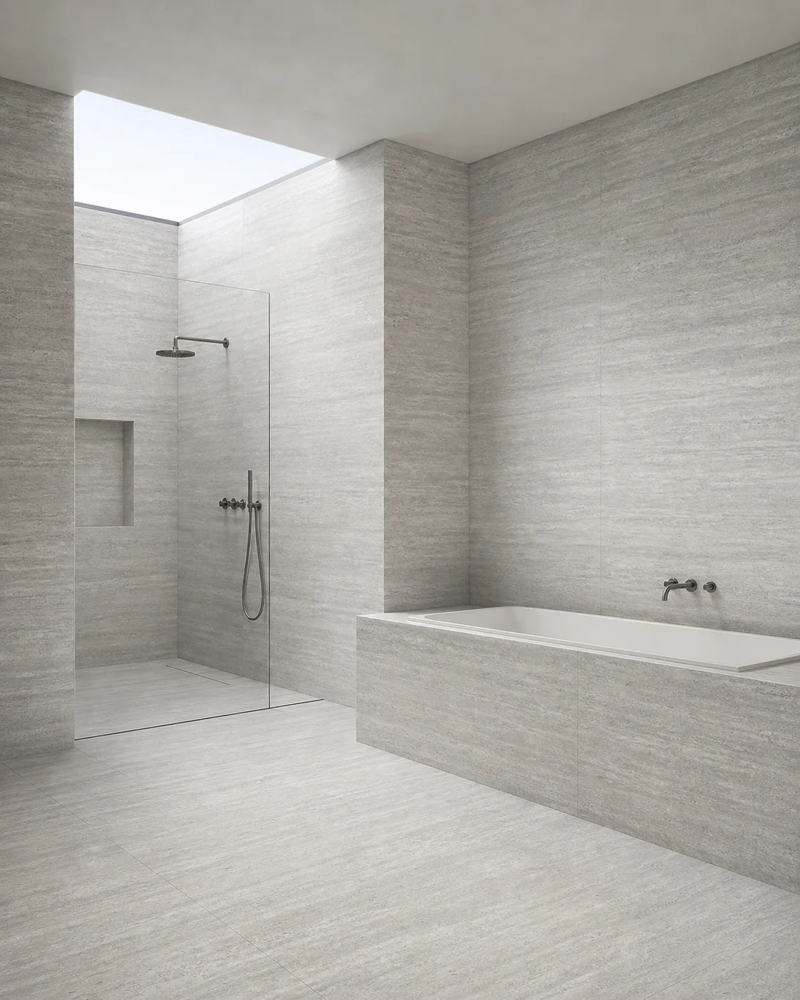
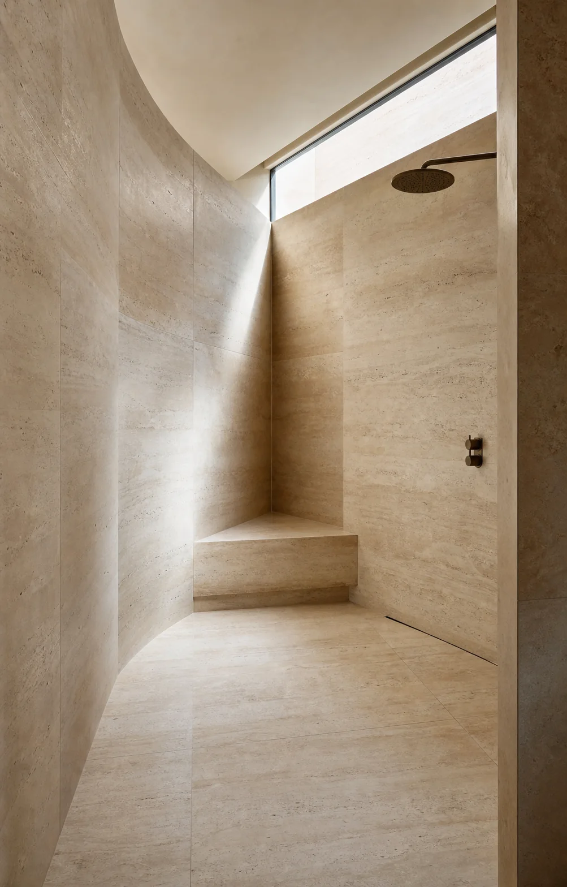
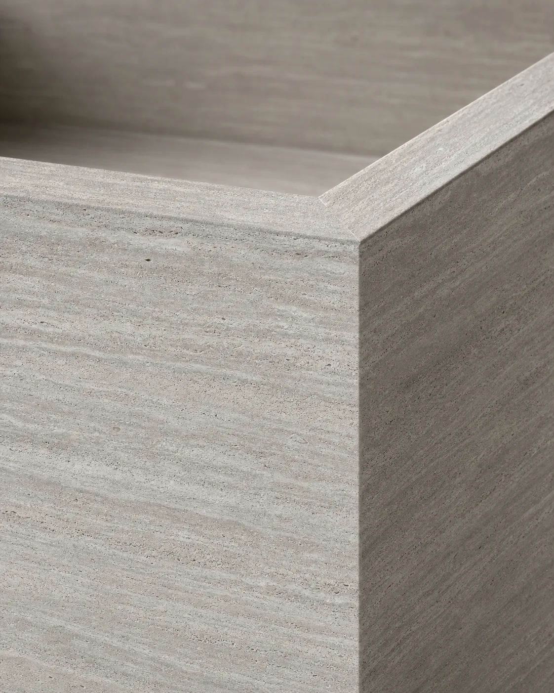
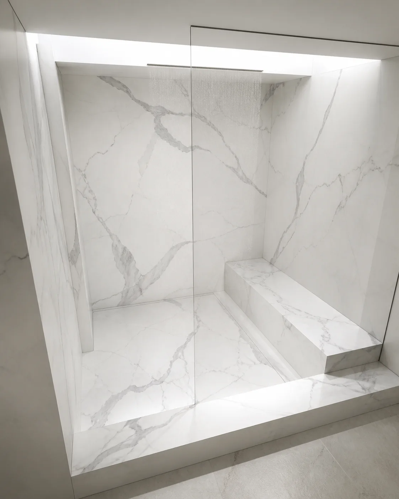
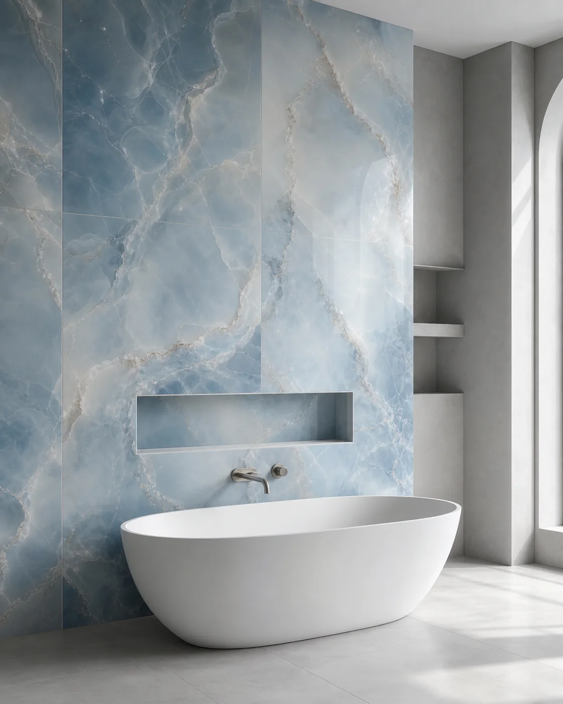
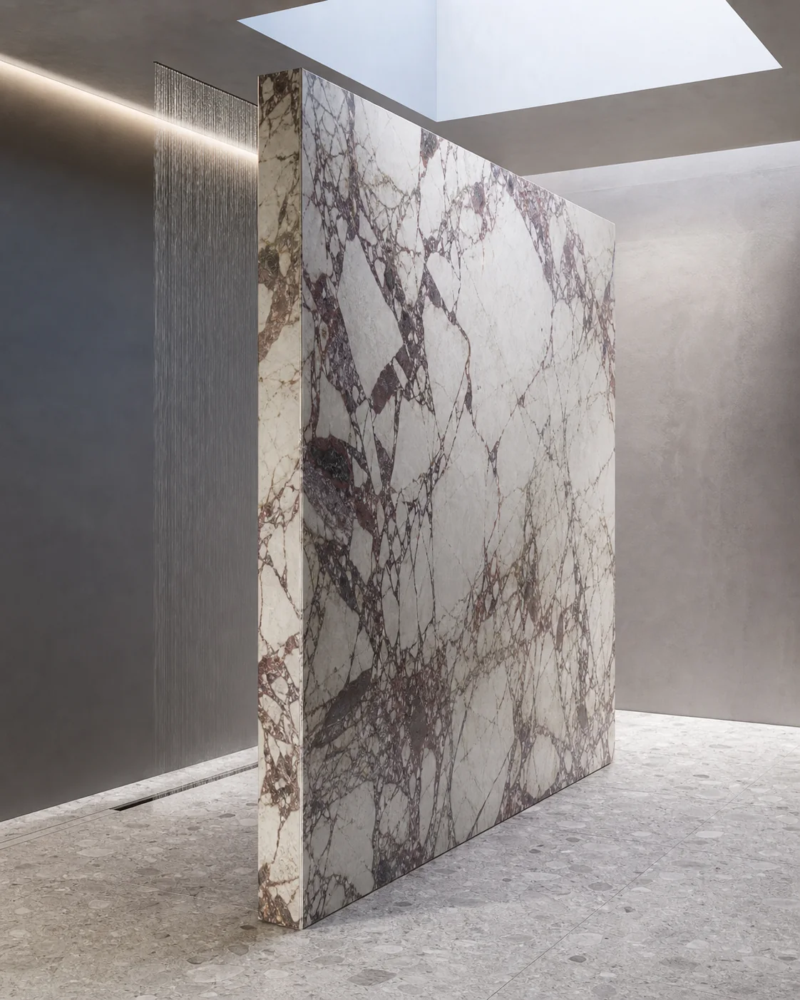

01
Bathroom surfaces
Walls and floors composed as one material field, with quieter transitions and fewer visual breaks.

Large-format tiling · London
Architectural porcelain for bathrooms, wet rooms, floors and feature walls—planned around the room, not simply fitted into it.
Slab positions, balanced cuts and key sightlines.
Flatness, stability and preparation beneath the finish.
Grout lines mapped to the architecture of the room.
Controlled corners, openings and transitions.
The surface system
Large-format tiling gives London interiors broad, calm planes with fewer visible joins. The result depends as much on preparation and setting out as it does on the porcelain itself.
We coordinate wall and floor layouts, vanity areas, brassware, drainage and adjoining finishes so every line has a reason to be there.
Explore porcelain fabricationBuilt detail
The wider view and the close detail are designed together: vein direction, cut positions, outlets, corners and transitions.



Where it works
Large-format porcelain works best where its layout can respond to the full composition—not just an isolated wall.

Walls and floors composed as one material field, with quieter transitions and fewer visual breaks.

Wall planes coordinated with waterproofing, falls, drainage and the visible rhythm of every joint.

Clean cuts around basins, mirrors and brassware, with edge details considered from every angle.

Statement surfaces where proportion, pattern direction and the final perimeter determine the result.
Installation method
A precise finish starts with a clear sequence. Each stage resolves decisions that become more visible as the tile size increases.
We assess the room, drawings, surfaces and critical junctions.
Tile positions, cuts, joints and focal sightlines are mapped.
The substrate is checked and prepared for a flat, stable surface.
Slabs, edges, openings and transitions are completed as one system.

Large-format porcelain
For clients looking for calm, near-continuous surfaces, we work with porcelain—planning every joint, cut and transition as part of the room.
A selected, manufactured surface that lets us design around known colour, scale and edge conditions before installation begins.
Porcelain is the material.
Precision is the method.
Colour, pattern and surface character are selected before the installation is set out.
Larger planes mean fewer interruptions, with each visible joint placed deliberately.
Corners, openings, brassware and transitions are treated as part of the complete surface.
Walls, floors, vanity areas and fabricated elements can share one considered material language.
Practical questions
Early decisions about the room, tile and substrate make the installation clearer—and the finished surface calmer.
The substrate, levels, tile layout, cuts, grout lines, edges and transitions should all be reviewed before installation begins. The Tile Association guide and MAPEI installation manual provide further technical guidance.
Yes, when the layout is planned carefully. Fewer grout lines can help a smaller bathroom feel calmer and more continuous.
Yes, depending on the tile, substrate and installation details. Wet room areas need careful planning around falls, waterproofing, edges and drainage.
Yes. We install large-format porcelain across feature walls, vanity areas, bathroom surfaces and architectural details.
Start the conversation
Send plans, approximate dimensions, your postcode and any material references. We’ll advise on the most useful next step.